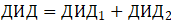
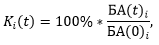
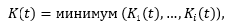
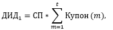
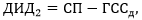
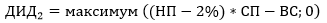
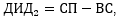

Приложение №1
Инвестиционная декларация
к договору страхования по программе «{{policy.product}}»
№ {{policy.number}} от {{policy.issueDate}} г. (далее – Декларация)

Страховщик: ООО СК «Росгосстрах Жизнь».
Лицензии Банка России: {{insurer.license}}, ИНН {{insurer.INN}}, КПП {{insurer.KPP}}
Юридический адрес: {{insurer.address}}
Реквизиты банка: {{bankInfo}}
Телефон круглосуточного Контакт-центра: 8 800 100 12 10 (бесплатный номер для
звонков по России).
Для оплаты считайте данный штрих код
в мобильном приложении интернет-банка
ДОГОВОР СТРАХОВАНИЯ № {{policy.number}} от {{policy.issueDate}} г.
по программе «{{policy.product}}»
на основании {{policy.rule}}
(далее по тексту – Правила).
| Фамилия Имя Отчество: | {{holder.fullName}} | Пол: | {{holder.gender}} | |||
| Дата рождения: | {{holder.dateOfBirth}} | Место рождения: | {{holder.birthPlace}} | |||
| Телефон: | {{holder.phoneNumber}} | Гражданство: | {{holder.citizenship}} | |||
| E-mail: | {{holder.email}} | |||||
| Документ, удостоверяющий личность: | {{holder.document.typeAndSN}} | Дата выдачи: | {{holder.document.dateOfIssue}} | |||
| Кем выдан: | {{holder.document.issuedBy}} | |||||
| Адрес постоянной регистрации: | {{holder.registrationAddress}} | |||||
| Почтовый адрес: | {{holder.postAddress}} | |||||
| Фамилия Имя Отчество: | {{insured.fullName}} | Пол: | {{insured.gender}} | |||
| Дата рождения: | {{insured.dateOfBirth}} | Место рождения: | {{insured.birthPlace}} | |||
| Телефон: | {{insured.phoneNumber}} | Гражданство: | {{insured.citizenship}} | |||
| E-mail: | {{insured.email}} | |||||
| Документ, удостоверяющий личность: | {{insured.document.typeAndSN}} | Дата выдачи: | {{insured.document.dateOfIssue}} | |||
| Кем выдан: | {{insured.document.issuedBy}} | |||||
| Адрес постоянной регистрации: | {{insured.registrationAddress}} | |||||
| Почтовый адрес: | {{insured.postAddress}} | |||||
| Выгодоприобретатель {{this.index}}. Доля {{this.percentage}}% | ||||||
| Фамилия Имя Отчество, Дата рождения: | {{this.beneficiar.fullName}}, {{this.beneficiar.dateOfBirth}} | Пол: | {{this.beneficiar.gender}} | |||
| Дата рождения: | {{this.beneficiar.dateOfBirth}} | Место рождения: | {{this.beneficiar.placeOfBirth}} | |||
| Телефон: | {{this.beneficiar.phoneNumber}} | E-mail: | {{this.beneficiar.email}} | Гражданство: | {{this.beneficiar.citizenship}} | |
| Документ, удостоверяющий личность: | {{this.beneficiar.document.typeAndSN}} | Дата выдачи: | {{this.beneficiar.document.dateOfIssue}} | |||
| Кем выдан: | {{this.beneficiar.document.document.issuedBy}} | |||||
| Адрес постоянной регистрации: | {{this.beneficiar.registrationAddress}} | |||||
| Почтовый адрес: | {{this.beneficiar.postAddress}} | |||||
В случае если общая доля менее 100%, Выгодоприобретателями на случай смерти Застрахованного по оставшейся доле являются наследники Застрахованного по закону.
{{/if}} {{else}}Наследники по закону
{{/if}}| Страховые риски | Страховая сумма, {{currency}} | Страховая премия, {{currency}} | Срок страхования по риску | |
| с | по | |||
| {{risk.premium.sum}} | ||||
| {{this.insuranceRisks}} | {{this.sumInsured}} | {{this.startDate}} | {{this.endDate}} | |
| {{this.insuranceRisks}} | {{this.sumInsured}} | {{this.startDate}} | {{this.endDate}} | |
При определении страховой суммы в договоре страхования в иностранной валюте страховая выплата производится в рублях по курсу Банка России на дату выплаты. Банковские расходы, связанные с осуществлением страховой выплаты, оплачиваются получателем платежа.
| Страховая премия уплачивается единовременно в полном объеме не позднее: | {{experationDate}} | |
В случае если страховая премия не была оплачена (или была оплачена не полностью) в указанный срок,
{{#if insuranceTerms.paymentPeriodLastDate}} либо в случае оплаты страховой премии позднее {{insuranceTerms.paymentPeriodLastDate}}, {{/if}}
Страховщик вправе считать договор страхования не вступившим в силу и произвести возврат поступивших
средств Страхователю.
При определении страховой премии в договоре страхования в иностранной валюте сумма, подлежащая
уплате в
рублях, определяется по курсу Банка России соответствующей валюты на дату оплаты. Банковские расходы,
связанные с оплатой страховой премии, несет Страхователь.
| Срок действия договора страхования: | {{insuranceTerms.text}} | Договор страхования вступает в силу с {{insuranceTerms.startDate}} при условии уплаты страховой премии в полном объеме и действует до {{insuranceTerms.endDate}} включительно. |
Выкупная сумма определяется в пределах сформированного в установленном порядке страхового резерва на день прекращения договора страхования.
| Период действия договора страхования | Выкупная сумма, {{currency}} | |
| начало | окончание | |
| {{this.periodStartDate}} | {{this.periodEndDate}} | {{this.surrenderValue}} |
При определении выкупной суммы в договоре страхования в иностранной валюте выплата выкупной суммы переводится в рублях по курсу Банка России на дату выплаты. Банковские расходы, связанные с осуществлением выплаты выкупной суммы, оплачиваются получателем платежа.
| Настоящим я, {{insured.fullName}}, | подтверждаю, что: | не подтверждаю, что: |
{{this}}
| Настоящим Страхователь и Застрахованный | подтверждают, что: | не подтверждают, что: |
{{this}}
Приложение №1
Инвестиционная декларация
к договору страхования по программе «{{policy.product}}»
№ {{policy.number}} от {{policy.issueDate}} г. (далее – Декларация)
Общие положения
В настоящей Декларации используются следующие определения и термины:
Актив Инвестиционной части – инвестиционный инструмент, динамика (изменение цены) и денежные поступления от которого определяют величину дополнительного инвестиционного дохода (далее – ДИД). Описание Актива Инвестиционной части указано в п. 2.2 Декларации.
Расчетный агент – организация, указанная в п. 2.5 Декларации, которая выполняет функции по порядку определения:
- переменных, используемых в целях определения размера и условий начисления и выплаты ДИД;
- событий и/или обстоятельств, влияющих на размер и условия начисления и выплаты ДИД;
- иных событий и/или обстоятельств, имеющих значение для определения сроков и/или условий досрочного погашения инструментов Инвестиционной части;
- событий и/или обстоятельств, влияющих на размер и условия определения суммы, выплачиваемой при погашении (досрочном погашении) инструментов Инвестиционной части;
- выплат при погашении (досрочном погашении) инструментов Инвестиционной части.
Эмитент – организация, выпустившая инвестиционный инструмент, приобретенный за счет средств Инвестиционной части, денежные поступления от которого определяют размер ДИД.
Купон – выраженная в процентах от страховой премии ставка, указанная в п. 2.4 Декларации, которая характеризует размер купонного дохода по договору страхования и используется при расчете ДИД.
Купонный период – временной интервал, определенный в п. 2.4 Декларации, в течение которого динамика (изменение цены) компонентов Корзины оказывает влияние на расчет ДИД, даты окончания купонных периодов являются датами наблюдения для целей расчета ДИД, при этом последняя дата наблюдения совпадает с датой окончания расчета ДИД.
Период инвестирования – период, в течение которого средства Инвестиционной части были фактически инвестированы и за который выплачивается ДИД или его часть.
Структура продукта
1.1. Страховщик за счет средств страховой премии формирует Инвестиционную часть с целью исполнения обязательств по договору страхования.
1.2 Инвестиционная часть – набор инвестиционных инструментов, приобретенных за счет средств страховой премии и обеспечивающих выполнение обязательств Страховщика по выплате страховых и выкупных сумм, а также обеспечивающих зависимость денежных поступлений по инструментам Инвестиционной части от динамики (изменения цен) её компонентов в течение периода расчета ДИД. Стоимость инструментов Инвестиционной части (денежные поступления от инструментов Инвестиционной части) определяют размер ДИД.
Параметры Инвестиционной части
2.1. Актив Инвестиционной части: {{strategyDescriptionFull}}.
2.2. Описание Актива Инвестиционной части – Корзина акций: {{baseActiveDescription}}
2.3. Период расчета ДИД: дата начала расчета ДИД – {{purchaseDate}}, дата окончания расчета ДИД – {{dischargeDate}}.
2.4. Купонные периоды:
| N | Дата начала купонного периода | Дата наблюдения (дата окончания купонного периода), t | Kt1 (купонный барьер) | Купон (t) | Kt2 (барьер для фиксации ДИД1) |
| {{this.number}} | {{this.beginDate}} | {{this.endDate}} | {{this.barrier}} | {{this.participationCoeff}} | {{this.barrierAutoCall}} |
2.5. Расчетный агент: ООО «Бизнес-Финанс».
2.6. Эмитент: {{dataBasicInvestment.emitent}}.
Порядок расчета дополнительного инвестиционного дохода (ДИД)
3.1. Дополнительный инвестиционный доход рассчитывается в валюте страхования и состоит из двух частей:

Где ДИД1 рассчитывается по итогам каждого купонного периода в течение срока страхования с учетом значения минимального прироста стоимости Актива Инвестиционной части на соответствующую дату наблюдения; ДИД2 рассчитывается при наступлении страхового случая по риску «Дожитие Застрахованного до окончания срока страхования» (далее – «Дожитие») и при досрочном прекращении договора страхования по причинам иным, чем наступление страхового случая.
В качестве Где ДИД1 на конкретную дату x используется ДИД1, рассчитанный в дату наблюдения, предшествующую дате x.
3.2. Для каждого из компонентов Актива Инвестиционной части i и для каждой даты наблюдения t вычисляется изменение стоимости компонента Актива Инвестиционной части Ki:

Где БА(0)i – значение (цена) на закрытие торгового дня i -го компонента Актива Инвестиционной части на дату начала расчета ДИД; БА(t)i – значение (цена) на закрытие торгового дня i -го компонента Актива Инвестиционной части на дату наблюдения t.
В случае если значение любого компонента Актива Инвестиционной части невозможно определить на требуемую дату, то компоненты Актива Инвестиционной части одновременно переопределяются на даты, последовательно следующие за требуемой датой, до тех пор, пока значение каждого компонента Актива Инвестиционной части не будет определено.
3.3. Минимальный прирост стоимости Актива Инвестиционной части на каждую дату наблюдения t определяется как минимальное неотрицательное изменение по всем компонентам Актива Инвестиционной части:

3.4. Размер ДИД2 рассчитывается следующим образом:
3.4.1. Размер ДИД2 на дату начала расчета ДИД равен 0 (нулю).
3.4.2. Если на дату наблюдения t минимальный прирост стоимости Актива Инвестиционной части K(t) меньше значения Kt1, указанное в п. 2.4 Декларации для этой даты наблюдения, то расчет ДИД1 не производится и размер ДИД1, рассчитанный в предыдущую дату наблюдения, остается без изменений.
3.4.3. Если на дату наблюдения t минимальный прирост стоимости Актива Инвестиционной части K(t) равен или превышает значение Kt1, указанного в п. 2.4 Декларации для этой даты наблюдения, то ДИД1 устанавливается равным произведению страховой премии на сумму купонов за все прошедшие точки наблюдений, включая купон, соответствующий дате t:

Где СП – страховая премия; Купон(m) – размер купона, указанный в п. 2.4 Декларации и соответствующий дате наблюдения m.
3.4.4. Если на дату наблюдения t значение Kt2 не определено в п.2.4 Декларации (значение «нет» в соответствующей ячейке таблицы п. 2.4 Декларации) или минимальный прирост стоимости Актива Инвестиционной части K(t) меньше значения Kt2, то размер ДИД1, рассчитанный в соответствии с п. 3.4.3 Декларации, не изменяется.
3.4.5. Если на дату наблюдения t минимальный прирост стоимости Актива Инвестиционной части K(t) равен или превышает значения Kt2, то размер ДИД1, рассчитанный в соответствии с п. 3.4.3 Декларации, фиксируется и не подлежит изменению в течение срока страхования вне зависимости от изменения стоимости компонентов Актива Инвестиционной части.
3.5. Размер ДИД2 рассчитывается следующим образом:
3.5.1. Размер ДИД2 на дату начала расчета ДИД и при наступлении страхового случая по риску «Смерть Застрахованного по любой причине» (далее – «Смерть») равен 0 (нулю).
3.5.2. При наступлении страхового случая по риску «Дожитие»:
3.5.2.1. если до даты страхового случая размер ДИД1 не был зафиксирован в соответствии с п. 3.4.5 Декларации, то ДИД2 рассчитывается в на последнюю дату наблюдения t, предшествующую дате наступления страхового случая по риску «Дожитие», следующим образом:
3.5.2.1.1. Если значение K(t) меньше {{barrier}}, то ДИД2 =СП* K(t)-ГССд;
3.5.2.1.2. Если значение K(t) равно или превышает {{barrier}}, то ДИД2=СП-ГССд;
3.5.2.2 если до даты страхового случая размер ДИД1 был зафиксирован в соответствии с п. 3.4.5 Декларации, то ДИД2 рассчитывается как разница между страховой премией и страховой суммой по риску «Дожитие»:

Где ГССд – страховая сумма по риску «Дожитие»; СП – страховая премия.
3.5.3. При досрочном прекращении договора страхования по причинам иным, чем наступление страхового случая:
3.5.3.1. если до даты досрочного прекращения размер ДИД1 не был зафиксирован в соответствии с п. 3.4.5 Декларации, то ДИД2 рассчитывается как неотрицательная разница между стоимостью Актива Инвестиционной части, уменьшенной на расходы на досрочное прекращение договора, и гарантированной выкупной суммой, определенной на дату досрочного прекращения договора:

3.5.3.2. если до даты досрочного прекращения размер ДИД1 был зафиксирован в соответствии с п. 3.4.5 Декларации, то ДИД2 рассчитывается как разница между страховой премией и гарантированной выкупной суммой, определенной на дату досрочного прекращения договора:

Где СП – страховая премия; ВС – гарантированная выкупная сумма, определенная на дату досрочного прекращения договора; НП – котировка на продажу Актива Инвестиционной части в процентах от номинальной стоимости Актива Инвестиционной части (публикуемая Эмитентом) на дату досрочного прекращения договора.
Порядок выплаты ДИД
4.1. Определение размера начисленного купона и, соответственно, начисление ДИД1 по договору страхования производится не позднее 30 календарных дней с соответствующей даты наблюдения. Начисление ДИД2 по договору страхования производится на дату досрочного прекращения договора страхования по причинам иным, чем наступление страхового случая или на дату окончания страхования при наступлении страхового случая по риску «Дожитие».
4.2. В случае досрочного прекращения договора страхования по причинам иным, чем наступление страхового случая, выплате подлежит ДИД, рассчитанный на дату прекращения договора страхования за минусом суммы фактически выплаченного ДИД.
4.3. В случае обращения Застрахованного (или иного лица, в пользу которого заключен Договор страхования по риску «Дожитие») в течение срока страхования за выплатой ДИД (или его части), выплате подлежит ДИД (или его часть), рассчитанный по итогам определенного купонного периода за минусом суммы фактически выплаченного ДИД.
4.4. При наступлении страхового случая по риску «Дожитие» выплате подлежит ДИД, рассчитанный на дату окончания срока страхования за минусом суммы фактически выплаченного ДИД.
4.5. При наступлении страхового случая по риску «Смерть» выплате подлежит ДИД, рассчитанный на дату принятия решения о страховой выплате за минусом суммы фактически выплаченного ДИД.
4.6. Выплата ДИД при прекращении договора страхования осуществляется в течение 90 календарных дней после даты окончания фактического периода инвестирования.
Основные риски
5.1.Инвестирование связано с принятием рисков. Цель настоящего раздела – предоставить Страхователю информации о рисках, связанных с инвестированием, а также предупредить о возможных потерях, которые могут негативно повлиять на стоимость инструментов Инвестиционной части, размер ДИД и возможность его выплаты. Страхователь понимает, что наличие ДИД обусловлено исключительно динамикой инструментов Инвестиционной части. Возможность получения Страхователем ДИД зависит от фактической возможности реализации Страховщиком инструментов Инвестиционной части в соответствии с условиями, указанными в настоящей Инвестиционной декларации. В случае невозможности получения Страховщиком средств от реализации инструментов Инвестиционной части по независящим от него причинам, в том числе реализации рисков, указанных в настоящем разделе (и в зависимости от их характера) – Страховщик вправе полностью или в течение определенного периода времени не распределять, не начислять и не выплачивать ДИД. По причине указанных ниже рисков ДИД может быть равен нулю в одном, нескольких или всех купонных периодах.
5.2. Рыночный риск. Риск снижения ДИД в результате возникновения неблагоприятных событий экономического характера, выражающихся, например, в негативной динамике одного или нескольких компонентов Актива Инвестиционной части, валютного курса и др.
5.3. Кредитный риск. Риск потерь в результате полного или частичного неисполнения обязательств Эмитентом, инвестиционным брокером, через которого осуществляются операции, а также прочими участниками, задействованными в операциях по перечислению денежных средств.
5.4. Риск изменения кредитного качества Эмитента, риск замены Эмитента. Кредитное качество Эмитента может как улучшаться, так и ухудшаться в течение срока действия договора. Эмитент имеет право объявить о назначении нового эмитента, кредитное качество которого может быть ниже.
5.5. Риск вторичного рынка. Котировки на продажу инвестиционных инструментов Инвестиционной части, на основании которых производится расчет ДИД при досрочном прекращении договора страхования или при наступлении страхового случая по риску «Смерть», определяются и публикуются Эмитентом. Эмитент стремится предоставлять котировки, но не гарантирует это. Страховщик не может оказывать влияние на котировки. В силу указанных выше факторов Страхователь несет риск снижения стоимости инструментов Инвестиционной части, а также риск самого факта наличия котировки на продажу инструментов Инвестиционной части от Эмитента.
5.6. Калькуляционный риск. Расчет всех параметров, используемых для расчета купонов, осуществляется Расчетным агентом. В случае Корзины акций в качестве Актива Инвестиционной части Расчетный агент, руководствуясь принципами добросовестности и справедливости, вправе изменить компоненты Корзины акций и/или скорректировать их цены с целью отражения справедливого экономического эффекта от некоторых событий, таких как (но не ограничиваясь ими): делистинг акции с биржи, слияние, поглощение или реорганизация компании, консолидация или дробление акций, а также другие корпоративные действия, имеющие размывающее или консолидирующее действие на стоимость акции.
5.7. Риск досрочного погашения инструментов Инвестиционной части. Расчетный агент на свое разумное усмотрение в соответствии с эмиссионной документацией имеет право досрочно погасить инструменты Инвестиционной части вследствие ряда событий, таких как: прекращение торговли компонентами Актива Инвестиционной части, невозможность определения значений компонентов Актива Инвестиционной части в течение длительного времени, а также других событий. Сумма, выплачиваемая по инструментам Инвестиционной части в результате досрочного погашения, может быть меньше, чем сумма, которая была бы выплачена в случае отсутствия досрочного погашения.
5.8. Правовой риск. Риск потерь, связанных с появлением новых или изменением (отменой) существующих нормативно-правовых актов в Российской Федерации, а также любых других юрисдикциях, в которых ведут деятельность контрагенты, вовлеченные в процесс выпуска и совершения сделок с инструментами Инвестиционной части, а также инструментами, входящими (напрямую или через фонды) в состав Актива Инвестиционной части .
5.9. Риск, связанный с международными ограничениями (например, введение санкций), ограничивающими права получения инвестиционного дохода по инструментам Инвестиционной части Страховщиком, а также связанный с введением иных ограничений, делающих невозможным размещение средств Инвестиционной части и получение ДИД в соответствии с Декларацией.
5.10. Прочие риски (не отраженные в Декларации вследствие разнообразия ситуаций, возникающих при инвестировании), которые могут повлиять на стоимость Инвестиционной части и, как следствие, на величину ДИД, и на саму возможность выплатить ДИД.
5.11. Страховщик не выступает с инвестиционными рекомендациями и не гарантирует выплату ДИД.
5.12. Страхователь понимает и принимает указанные риски.
Информация
о договоре добровольного страхования, в том числе о его
условиях и рисках, связанных с его исполнением
по программе «{{policy.product}}» № {{policy.number}} от {{policy.issueDate}} г.
Используйте информацию, содержащуюся в данной таблице,
при принятии решения о том, подходит ли Вам предлагаемая
услуга с учетом уровня Вашего среднемесячного дохода
| Разница между страховой суммой по риску «Дожитие Застрахованного до окончания срока страхования» (далее – Дожитие) и совокупной страховой премией по договору добровольного страхования |
Разница между страховой суммой по риску «Смерть Застрахованного по любой причине» (далее – Смерть) и совокупной страховой премией по договору добровольного страхования |
| {{difference.printDiffSurvavial1}}1 {{difference.printDiffSurvavial2}} | {{difference.printDiffDeath1}}1 {{difference.printDiffDeath2}} |
| № п/п | ОПИСАНИЕ СОДЕРЖАНИЯ ПРЕДОСТАВЛЯЕМОЙ ИНФОРМАЦИИ | |||||||||||||
| 1 | Информация о Страховщике |
Полное наименование: Общество с ограниченной ответственностью Страховая
компания «Росгосстрах
Жизнь» (далее – Страховая компания или Страховщик). Лицензии Банка России {{insurer.license}}.
Кредитный рейтинг: {{insurer.rating}} |
||||||||||||
| 2 | Информация о доходности по договорам добровольного страхования с участием Страхователя в инвестиционном доходе Страховщика, по которым обязательства по уплате страховой суммы по риску Дожитие за 3 (три) предшествующих календарных года прекращены исполнением | {{#if newProduct}}Расчет доходности невозможен в силу отсутствия договоров с участием Страхователя в инвестиционном доходе Страховщика, по которым обязательства по уплате страховой суммы по риску Дожитие за 3 (три) календарных года, предшествующих заключению настоящего договора, прекращены исполнением и которые содержат условия, аналогичные заключаемому договору{{else}}{{historyIncome}}% годовых.{{/if}} | ||||||||||||
| 3 | Предупреждение о риске: |
|
||||||||||||
| 4 | Информация о праве получателя страховых услуг отказаться от договора добровольного страхования, порядке определения размера страховой выплаты, порядке и сроке осуществления страховой выплаты по каждому страховому риску, обязанности Страховщика удержать налог при расчете страховой выплаты |
|
||||||||||||
| 5 | Информация о размере денежных средств (в процентах на день предоставления информации), направляемых на обеспечение исполнения обязательств Страховщика по договору добровольного страхования по выплате страховой суммы и инвестиционного дохода | {{commission.allOutcome}}% от страховой премии (суммы страховых взносов за весь период действия договора страхования) в размере {{commission.allPremium}} рублей1. | ||||||||||||
| 6 | Информация о размерах агентского вознаграждения, комиссионного вознаграждения, а также платежей, связанных с заключением и исполнением договора добровольного страхования (в процентах) | {{commission.allIncome}} %. | ||||||||||||
|
Примечание к пунктам 5 и 6:
Сумма денежных средств за весь срок действия договора добровольного страхования, подлежащих передаче получателем страховых услуг, направляется на обеспечение исполнения обязательств Страховщика по выплате выгодоприобретателю страховой суммы и инвестиционного дохода, на выплату агентского вознаграждения, комиссионного вознаграждения, а также на платежи, связанные с заключением и исполнением договора добровольного страхования, и составляет 100% (сто процентов). |
||||||||||||||
| 7 | Информация о способе определения дохода по договору добровольного страхования жизни, а также, если применимо, перечне показателей, от значения (изменения значений) которых зависит размер дохода по договору добровольного страхования |
Структура продукта 1.1. Страховщик за счет средств страховой премии формирует Инвестиционную часть с целью исполнения обязательств по договору страхования. 1.2 Инвестиционная часть – набор инвестиционных инструментов, приобретенных за счет средств страховой премии и обеспечивающих выполнение обязательств Страховщика по выплате страховых и выкупных сумм, а также обеспечивающих зависимость денежных поступлений по инструментам Инвестиционной части от динамики (изменения цен) её компонентов в течение периода расчета ДИД. Стоимость инструментов Инвестиционной части (денежные поступления от инструментов Инвестиционной части) определяют размер ДИД. Параметры Инвестиционной части 2.1. Актив Инвестиционной части: {{strategyDescriptionFull}}. 2.2. Описание Актива Инвестиционной части – Корзина акций: {{baseActiveDescription}} 2.3. Период расчета ДИД: дата начала расчета ДИД – {{purchaseDate}}, дата окончания расчета ДИД – {{dischargeDate}}. 2.4. Купонные периоды:
2.5. Расчетный агент: ООО «Бизнес-Финанс». 2.6. Эмитент: {{dataBasicInvestment.emitent}}. Порядок расчета дополнительного инвестиционного дохода (ДИД) 3.1. Дополнительный инвестиционный доход рассчитывается в валюте страхования и состоит из двух частей: Где ДИД1 рассчитывается по итогам каждого купонного периода в течение срока страхования с учетом значения минимального прироста стоимости Актива Инвестиционной части на соответствующую дату наблюдения; ДИД2 рассчитывается при наступлении страхового случая по риску «Дожитие Застрахованного до окончания срока страхования» (далее – «Дожитие») и при досрочном прекращении договора страхования по причинам иным, чем наступление страхового случая. В качестве Где ДИД1 на конкретную дату x используется Где ДИД1, рассчитанный в дату наблюдения, предшествующую дате x. 3.2. Для каждого из компонентов Актива Инвестиционной части i и для каждой даты наблюдения t вычисляется изменение стоимости компонента Актива Инвестиционной части Ki: Где БА(0)i – значение (цена) на закрытие торгового дня i -го компонента Актива Инвестиционной части на дату начала расчета ДИД; БА(t)i – значение (цена) на закрытие торгового дня i -го компонента Актива Инвестиционной части на дату наблюдения t. В случае если значение любого компонента Актива Инвестиционной части невозможно определить на требуемую дату, то компоненты Актива Инвестиционной части одновременно переопределяются на даты, последовательно следующие за требуемой датой, до тех пор, пока значение каждого компонента Актива Инвестиционной части не будет определено. 3.3. Минимальный прирост стоимости Актива Инвестиционной части на каждую дату наблюдения t определяется как минимальное неотрицательное изменение по всем компонентам Актива Инвестиционной части:
3.4. Размер ДИД2 рассчитывается следующим образом: 3.4.1. Размер ДИД2 на дату начала расчета ДИД равен 0 (нулю). 3.4.2. Если на дату наблюдения t минимальный прирост стоимости Актива Инвестиционной части K(t) меньше значения Kt1, указанное в п. 2.4 Декларации для этой даты наблюдения, то расчет ДИД1 не производится и размер ДИД1, рассчитанный в предыдущую дату наблюдения, остается без изменений. 3.4.3. Если на дату наблюдения t минимальный прирост стоимости Актива Инвестиционной части K(t) равен или превышает значение Kt1, указанного в п. 2.4 Декларации для этой даты наблюдения, то ДИД1 устанавливается равным произведению страховой премии на сумму купонов за все прошедшие точки наблюдений, включая купон, соответствующий дате t: Где СП – страховая премия; Купон(m) – размер купона, указанный в п. 2.4 Декларации и соответствующий дате наблюдения m. 3.4.4. Если на дату наблюдения t значение Kt2 не определено в п.2.4 Декларации (значение «нет» в соответствующей ячейке таблицы п. 2.4 Декларации) или минимальный прирост стоимости Актива Инвестиционной части K(t) меньше значения Kt2, то размер ДИД1, рассчитанный в соответствии с п. 3.4.3 Декларации, не изменяется. 3.4.5. Если на дату наблюдения t минимальный прирост стоимости Актива Инвестиционной части K(t) равен или превышает значения Kt2, то размер ДИД1, рассчитанный в соответствии с п. 3.4.3 Декларации, фиксируется и не подлежит изменению в течение срока страхования вне зависимости от изменения стоимости компонентов Актива Инвестиционной части. 3.5. Размер ДИД2 рассчитывается следующим образом: 3.5.1. Размер ДИД2 на дату начала расчета ДИД и при наступлении страхового случая по риску «Смерть Застрахованного по любой причине» (далее – «Смерть») равен 0 (нулю). 3.5.2. При наступлении страхового случая по риску «Дожитие»: 3.5.2.1. если до даты страхового случая размер ДИД1 не был зафиксирован в соответствии с п. 3.4.5 Декларации, то ДИД2 рассчитывается в на последнюю дату наблюдения t, предшествующую дате наступления страхового случая по риску «Дожитие», следующим образом: 3.5.2.1.1. Если значение K(t) меньше {{barrier}}, то ДИД2 =СП* K(t)-ГССд; 3.5.2.1.2. Если значение K(t) равно или превышает {{barrier}}, то ДИД2=СП-ГССд; 3.5.2.2 если до даты страхового случая размер ДИД1 был зафиксирован в соответствии с п. 3.4.5 Декларации, то ДИД2 рассчитывается как разница между страховой премией и страховой суммой по риску «Дожитие»: Где ГССд – страховая сумма по риску «Дожитие»; СП – страховая премия. 3.5.3. При досрочном прекращении договора страхования по причинам иным, чем наступление страхового случая: 3.5.3.1. если до даты досрочного прекращения размер ДИД1 не был зафиксирован в соответствии с п. 3.4.5 Декларации, то ДИД2 рассчитывается как неотрицательная разница между стоимостью Актива Инвестиционной части, уменьшенной на расходы на досрочное прекращение договора, и гарантированной выкупной суммой, определенной на дату досрочного прекращения договора: 3.5.3.2. если до даты досрочного прекращения размер ДИД1 был зафиксирован в соответствии с п. 3.4.5 Декларации, то ДИД2 рассчитывается как разница между страховой премией и гарантированной выкупной суммой, определенной на дату досрочного прекращения договора: Где СП – страховая премия; ВС – гарантированная выкупная сумма, определенная на дату досрочного прекращения договора; НП – котировка на продажу Актива Инвестиционной части в процентах от номинальной стоимости Актива Инвестиционной части (публикуемая Эмитентом) на дату досрочного прекращения договора. |
||||||||||||
________________________________
1По курсу Банка России на дату заключения договора страхования, в случае если договор страхования заключен в валюте отличной от рублей
2Указание Банка России от 20.11.2015 № 3854-У «О минимальных (стандартных) требованиях к условиям и порядку осуществления отдельных видов добровольного страхования».
Приложение к Информации о договоре добровольного страхования, в том числе о его условиях и рисках, связанных с его исполнением по программе «{{policy.product}}» № {{policy.number}} от {{policy.issueDate}} г.
При расторжении договора страхования выкупная сумма определяется в пределах сформированного в установленном порядке страхового резерва на день прекращения договора страхования. В случае наличия у Страхователя задолженности по уплате страховых взносов перед Страховщиком, сумма задолженности вычитается из выкупной суммы.
В случае наличия у Страхователя задолженности по уплате страховых взносов перед Страховщиком, сумма задолженности вычитается из выкупной суммы
| Период действия договора страхования | Выкупная сумма, {{currency}} | |
| начало | окончание | |
| {{this.periodStartDate}} | {{this.periodEndDate}} | {{this.surrenderValue}} |